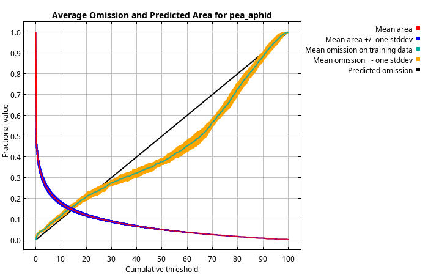
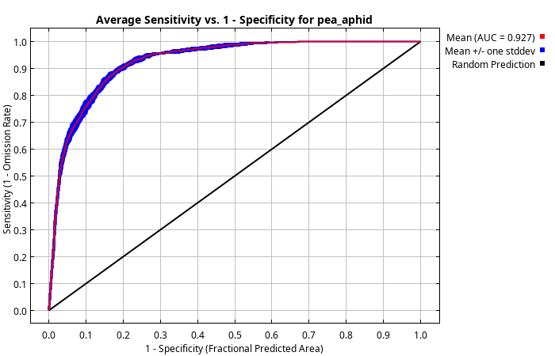
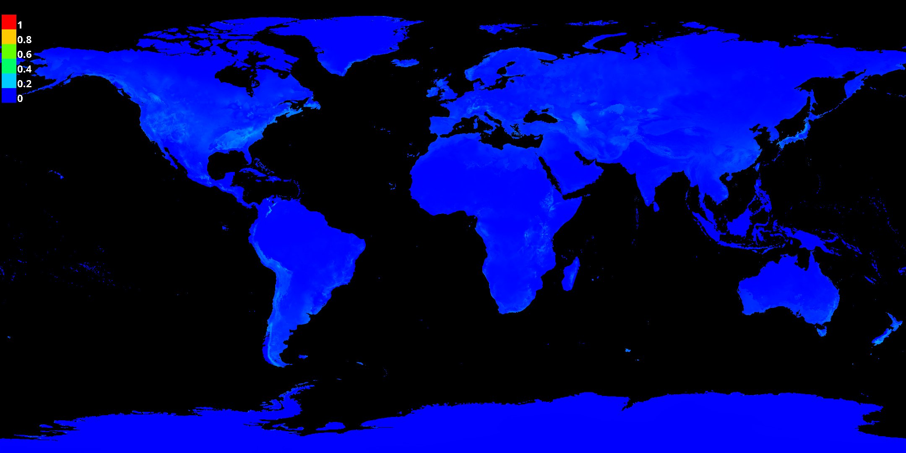
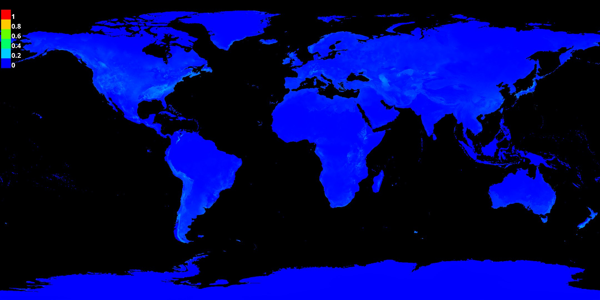
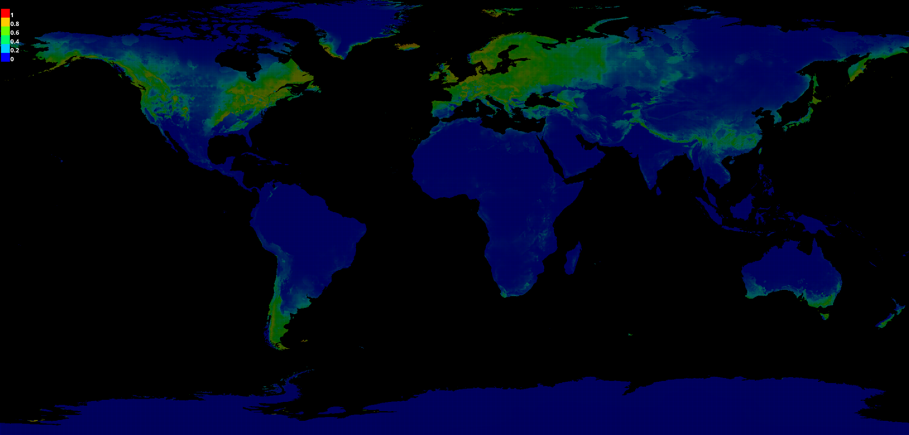
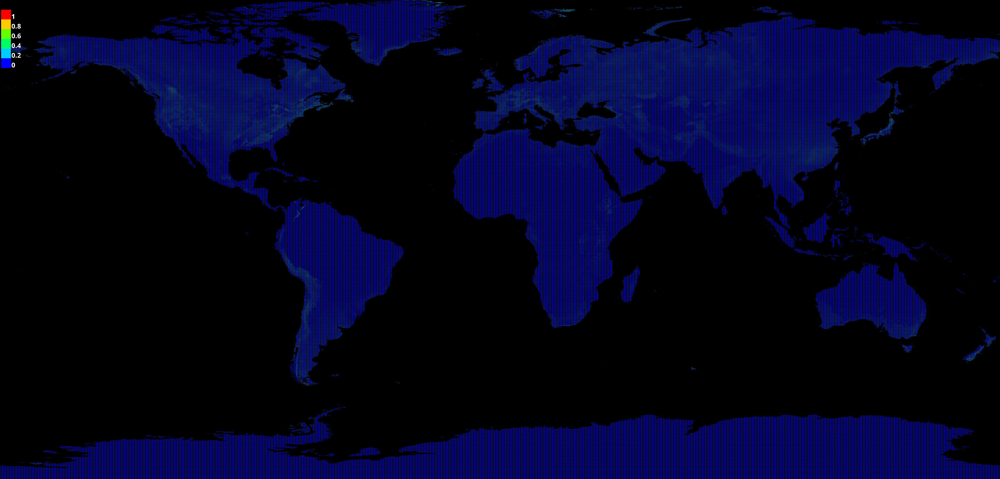

Replicated maxent model for pea_aphid
This page summarizes the results of 10 bootstrap models for pea_aphid, created using Maxent version 3.4.4.
Analysis of omission/commission
The following picture shows the training omission rate and predicted area as a function of the cumulative threshold, averaged over the replicate runs.

The next picture is the receiver operating characteristic (ROC) curve for the same data, again averaged over the replicate runs. The average training AUC for the replicate runs is 0.927, and the standard deviation is 0.004.

Pictures of the model
The following two pictures show the point-wise mean and standard deviation of the 10 output grids. Other available summary grids are min, max and median.
 

The following two pictures show the point-wise mean and standard deviation of the 10 models applied to the environmental layers in ssp245_2041_60. Other available summary grids are min, max and median.


Response curves
These curves show how each environmental variable affects the Maxent prediction. The curves show the mean response of the 10 replicate Maxent runs (red) and the mean +/- one standard deviation (blue, two shades for categorical variables).
In contrast to the above marginal response curves, each of the following curves represents a different model, namely, a Maxent model created using only the corresponding variable. These plots reflect the dependence of predicted suitability both on the selected variable and on dependencies induced by correlations between the selected variable and other variables. They may be easier to interpret if there are strong correlations between variables.
Analysis of variable contributions
The following table gives estimates of relative contributions of the environmental variables to the Maxent model.
| Variable | Percent contribution | Permutation importance |
|---|
| bio9 | 56.7 | 28.6 |
| bio8 | 22.7 | 45.6 |
| bio14 | 12.2 | 11.8 |
| bio3 | 5.4 | 9.2 |
| bio2 | 3 | 4.8 |
Command line to repeat this species model: java density.MaxEnt nowarnings noprefixes -E "" -E pea_aphid responsecurves outputformat=logistic "outputdirectory=/home/harichandana/Me/3 1/EST/Project/projections/ssp245_41-60" "projectionlayers=/home/harichandana/Me/3 1/EST/Project/futuredata/ssp245_2041_60" "samplesfile=/home/harichandana/Me/3 1/EST/Project/species.csv" "environmentallayers=/home/harichandana/Me/3 1/EST/Project/bio" randomseed nowriteclampgrid randomtestpoints=30 betamultiplier=0.1 replicates=10 replicatetype=bootstrap nohinge writeplotdata noautofeature nodoclamp appendtoresultsfile maximumiterations=1000 "applythresholdrule=maximum test sensitivity plus specificity"


{kind=link}
{kind=link}
{kind=link}
{kind=link}
{kind=link}
{kind=link}
{kind=link}
{kind=link}